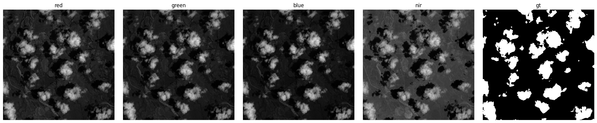
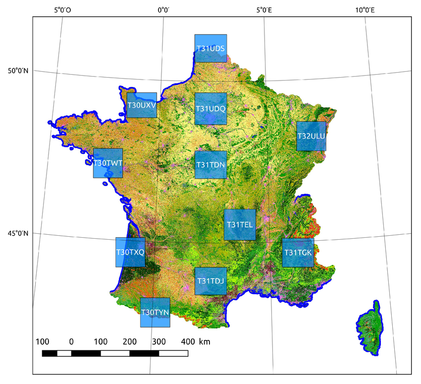
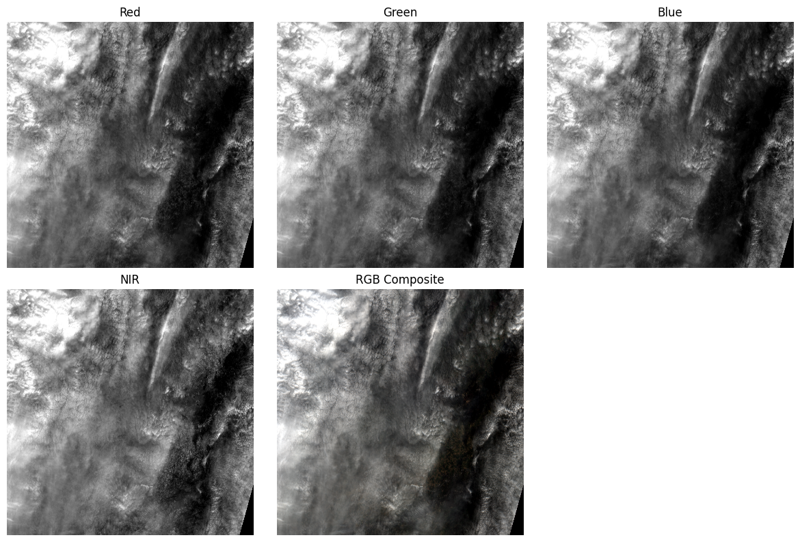
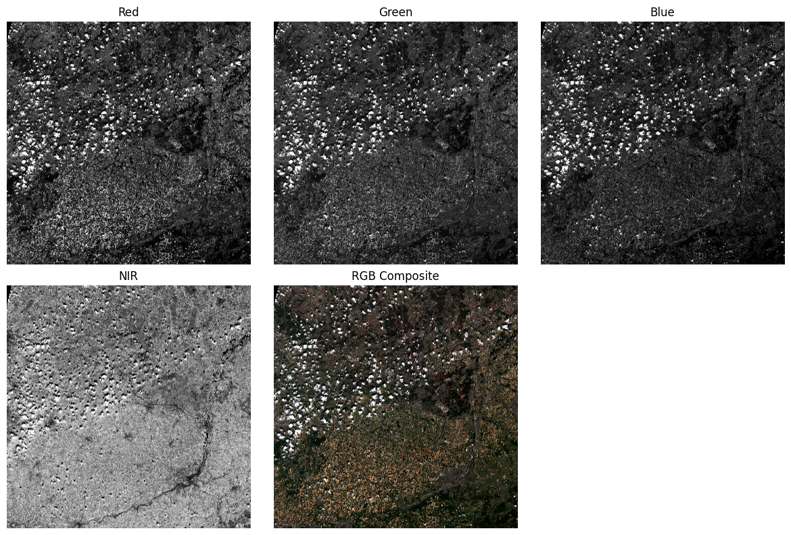

Data Preparation¶
Download and analyse the training dataset¶
From this dataset, we create a CSV dataset containing the paths of all files downloaded locally (8400 lines).
Here are the channels available for an image: 
We want to identify clouds on RGB channels using the TARGET mask.
Here's a compiled RGB image (although each channel will be separated for the model):

And here's a compiled RGBA image with the clouds removed (this will be the post-processed output image):

Download and analyze Sentinel-2 data¶
We download the data from the public S3 bucket.
These are JPEG2000 images, so we need to use rasterio rather than Pillow.
rasterio is designed for :
- GeoTIFF / JP2 reading
- Geospatial metadata (CRS, bbox), access to coordinates, UTM, not
Pillow. - Multi-band images (e.g.: 13 bands) handles band stacks perfectly,
Pillowonly understands RGB / L / P - Support for NIR, SWIR, 16-bit+ bands, whereas
Pillowis limited to 8-bit - GIS interoperability (QGIS, GDAL)
| channel | sentinel code |
|---|---|
| R | B04 |
| G | B03 |
| B | B02 |
| Near Infrared | B08 |
Each Sentinel image can be found thanks to an ID that depends on latitude and longitude (see examples of tiles below).

These are some examples of B04, B03, B02, B08 channels for 2 tiles:  